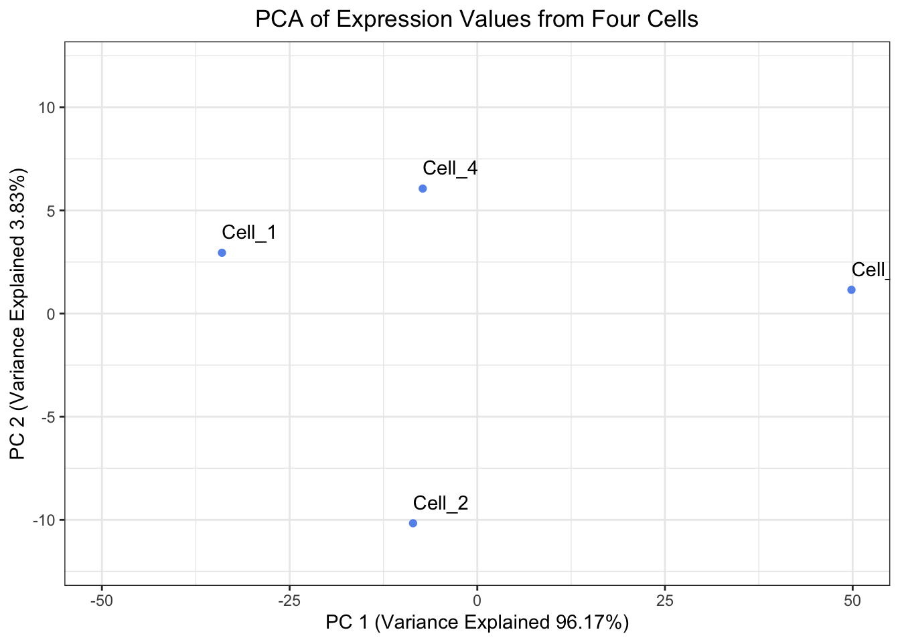

There are a couple properties of variance and co-variance that we can verify:
cov(X,X) is equal to var(X). We can observe this is mathematically below:
As a result, you will sometimes see covariance matrices written as:
Confirm this property by estimating the variance for Gene A.
# Estimate the variance for Gene Avar(recentered_expression_matrix[, "Gene_A"])
[1] 799.3333
Now estimate the covariance for Gene A and Gene A
# Estimate the covariance for Gene A and Gene Acov(recentered_expression_matrix[, "Gene_A"], recentered_expression_matrix[, "Gene_A"])
[1] 799.3333
Is the value the same? Does it match the value in the covariance matrix for Gene A and Gene A?
# Extract the covariance estimate of Gene A and Gene A from the covariance matrixcov_matrix["Gene_A", "Gene_A"]
[1] 799.3333
cov(X,Y) is equal to cov(Y,X). We can observe this is mathematically below:
Estimate the covariance of Gene B and Gene A.
# Estimate the covariance of Gene B and Gene Acov(recentered_expression_tibble[, "Gene_B"], recentered_expression_tibble[, "Gene_A"])
Gene_A
Gene_B 584.6667
How does this compare to the covariance that we estimated by hand?
It is the same.
Exercise 2
When looking at the percent explained by each principal component, the first principal component should explain the most and each of the following principal components should explain less than the previous principal component. Let’s have a look at our pct_var_explained object, are our results congruent with this expectation?
pct_var_explained
PC_1 PC_2
96.16723 3.83277
Yes, PC_1 explains 96.1672305 and PC_2 explains 3.8327695
Exercise 3
Create a plot of the Principal Components Analysis derived from prcomp(). Is it the same as the plot we derived except only rotated 180°?
# Create a tibble to hold the PC scores prcomp() found and also make the Cell IDs into a columnprcomp_pc_scores_tibble <- prcomp_PCA$x %>%as.data.frame() %>%rownames_to_column("cells") %>%as_tibble()# Plot the PC scores found by prcomp()ggplot(prcomp_pc_scores_tibble, aes(x = PC1, y = PC2, label = cells)) +geom_point( color ="cornflowerblue") +geom_text(hjust =0, vjust =-1) +theme_bw() +xlim(-50, 50) +ylim(-12, 12) +xlab(paste0("PC 1 (Variance Explained ", round(prcomp_eigenvalues["PC_1"]/sum(prcomp_eigenvalues) *100, digits =2),"%)")) +ylab(paste0("PC 2 (Variance Explained ", round(prcomp_eigenvalues["PC_2"]/sum(prcomp_eigenvalues) *100, digits =2),"%)")) +ggtitle("PCA of Expression Values from Four Cells") +theme(plot.title =element_text(hjust =0.5))

Yes, it is the same plot just rotated 180°.
Source Code
---title: "Theory of PCA - Answer Key"authors: "Will Gammerdinger, Noor Sohaili"date: "Friday, September 5, 2025"editor_options: markdown: wrap: 72---```{r}#| label: load_data#| echo: false# Items to pre-loadlibrary(tidyverse)# Create a vector for Cell IDscells <-c("Cell_1", "Cell_2", "Cell_3", "Cell_4")# Create a vector to hold expression values for Gene A across all of the cellsGene_A <-c(0, 12, 65, 23)# Create a vector to hold expression values for Gene B across all of the cellsGene_B <-c(4, 30, 57, 18)# Create a tibble to hold the cell names and expression valuesexpression_tibble <-tibble(cells, Gene_A, Gene_B)# Determine the center of the data by:# Finding the average expression of gene AGene_A_mean <-mean(expression_tibble$Gene_A)# Finding the average expression of gene BGene_B_mean <-mean(expression_tibble$Gene_B)# Create a vector to hold the center of the datacenter_of_data <-c(Gene_A_mean, Gene_B_mean)# Assign names to the components of the vectornames(center_of_data) <-c("Gene_A", "Gene_B")# Shift the data points so that they data is centered on the originrecentered_expression_tibble <- expression_tibble %>%mutate(Gene_A = Gene_A - Gene_A_mean,Gene_B = Gene_B - Gene_B_mean )# Move the cell IDs to the rownames and convert the tibble to a matrixrecentered_expression_matrix <- recentered_expression_tibble %>%column_to_rownames("cells") %>%as.matrix()# Create a covariance matrixcov_matrix <-cov(recentered_expression_matrix)# Find the eigenvalues and eigenvectors of the covariance matrixeig <-eigen(cov_matrix)# Transform the data into PC space by multiply the re-centered expression matrix by the eigenvectorspc_scores <- recentered_expression_matrix %*% eig$vectors# Name the columns in pc_scores objectcolnames(pc_scores) <-c("PC_1", "PC_2")# Calculate the percent of variance explained by each PC using the eigenvaluespct_var_explained <- (eig$values /sum(eig$values)) *100# Name the elements of the pct_var_explained by their PCnames(pct_var_explained) <-c("PC_1", "PC_2")# Create a tibble to hold the PC scores we found and also make the Cell IDs into a columnpc_scores_tibble <- pc_scores %>%as.data.frame() %>%rownames_to_column("cells") %>%as_tibble()# Run prcomp() on the expression tibble after moving the Cell IDs to be rownamesprcomp_PCA <- expression_tibble %>%column_to_rownames("cells") %>%prcomp()# Print the eigenvalues found by prcomp() by squaring prcomp_PCA$sdevprcomp_eigenvalues <- prcomp_PCA$sdev **2# Name the elements of the prcomp_eigenvalues by their PCnames(prcomp_eigenvalues) <-c("PC_1", "PC_2")```# Exercise 1There are a couple properties of variance and co-variance that we can verify:*cov(X,X)* is equal to *var(X)*. We can observe this is mathematically below:<img src="https://latex.codecogs.com/svg.image?&space;cov(X,X)=\frac{1}{n-1}\sum_{i=1}^{n}(x_{i}-\bar{x})(x_{i}-\bar{x})=\frac{1}{n-1}\sum_{i=1}^{n}(x_{i}-\bar{x})^{2}=var(X)" width="500">As a result, you will sometimes see covariance matrices written as:<img src="https://latex.codecogs.com/svg.image?\begin{bmatrix}var(X)&cov(X,Y)&...&cov(X,Z)\\cov(Y,X)&var(Y)&...&cov(Y,Z)\\...&...&...&...\\cov(Z,X)&cov(Z,Y)&...&var(Z)\\\end{bmatrix}" width="300">1. Confirm this property by estimating the variance for Gene A.```{r covariance_check_1}# Estimate the variance for Gene Avar(recentered_expression_matrix[, "Gene_A"])```2. Now estimate the covariance for Gene A and Gene A```{r covariance_check_2}# Estimate the covariance for Gene A and Gene Acov(recentered_expression_matrix[, "Gene_A"], recentered_expression_matrix[, "Gene_A"])```3. Is the value the same? Does it match the value in the covariance matrix for Gene A and Gene A?```{r covariance_matrix_check}# Extract the covariance estimate of Gene A and Gene A from the covariance matrixcov_matrix["Gene_A", "Gene_A"]```4. *cov(X,Y)* is equal to *cov(Y,X)*. We can observe this is mathematically below:<img src="https://latex.codecogs.com/svg.image?&space;cov(X,Y)=\frac{1}{n-1}\sum_{i=1}^{n}(x_{i}-\bar{x})(y_{i}-\bar{y})=\frac{1}{n-1}\sum_{i=1}^{n}(y_{i}-\bar{y})(x_{i}-\bar{x})=cov(Y,X)" width="500">Estimate the covariance of Gene B and Gene A.```{r covariance_check_3}# Estimate the covariance of Gene B and Gene Acov(recentered_expression_tibble[, "Gene_B"], recentered_expression_tibble[, "Gene_A"])```5. How does this compare to the covariance that we estimated by hand?It is the same.# Exercise 2When looking at the percent explained by each principal component, the first principal component should explain the most and each of the following principal components should explain less than the previous principal component. Let's have a look at our `pct_var_explained` object, are our results congruent with this expectation?```{r pct_explained}pct_var_explained```Yes, `PC_1` explains `r pct_var_explained[1]` and `PC_2` explains `r pct_var_explained[2]`# Exercise 3Create a plot of the Principal Components Analysis derived from `prcomp()`. Is it the same as the plot we derived except only rotated 180°?```{r plotting_PCA_prcomp}# Create a tibble to hold the PC scores prcomp() found and also make the Cell IDs into a columnprcomp_pc_scores_tibble <- prcomp_PCA$x %>%as.data.frame() %>%rownames_to_column("cells") %>%as_tibble()# Plot the PC scores found by prcomp()ggplot(prcomp_pc_scores_tibble, aes(x = PC1, y = PC2, label = cells)) +geom_point( color ="cornflowerblue") +geom_text(hjust =0, vjust =-1) +theme_bw() +xlim(-50, 50) +ylim(-12, 12) +xlab(paste0("PC 1 (Variance Explained ", round(prcomp_eigenvalues["PC_1"]/sum(prcomp_eigenvalues) *100, digits =2),"%)")) +ylab(paste0("PC 2 (Variance Explained ", round(prcomp_eigenvalues["PC_2"]/sum(prcomp_eigenvalues) *100, digits =2),"%)")) +ggtitle("PCA of Expression Values from Four Cells") +theme(plot.title =element_text(hjust =0.5))```Yes, it is the same plot just rotated 180°.